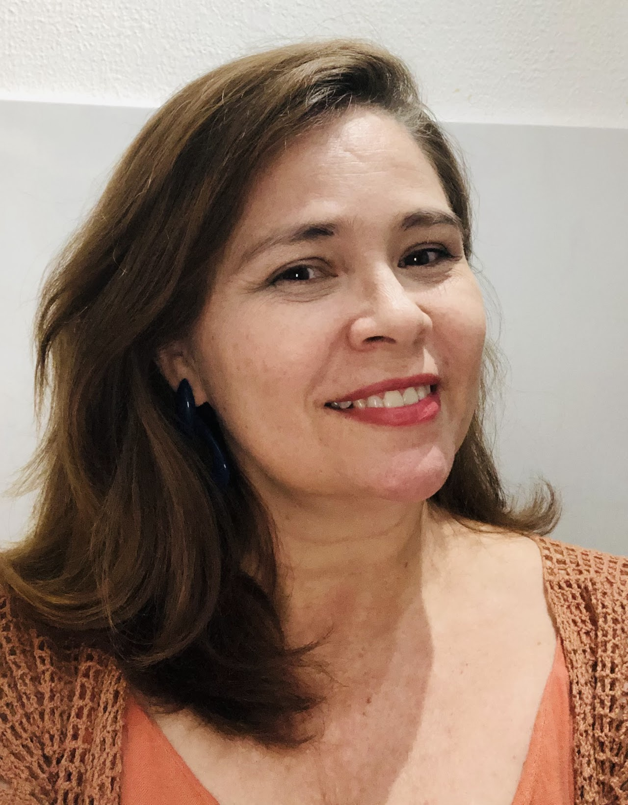

Sobre mim
Eu sou Aurileide, mas pode me chamar de Auri. Trabalho com produtos digitais desde 2000 e com educação superior, desde 2012.
Atualmente sou Product Designer no Sicredi, e colaboro para construir a melhor experiência para nossos associados.
Também atuei como Product Designer Lead voluntária no Portal Lacrei, no squad da pessoa profissional (Fev - Maio 2022).
Já passei algumas décadas na Academia. Tenho doutorado em Design (2017-2022, Universidade de Lisboa) e mestrado em Design (2014-2016, UFPE). Minhas pesquisas são na área de design de informação, motivadas pelos problemas que as pessoas vão enfrentando no dia a dia, na manipulação de informações.
Adoro trabalhar em equipe e desenvolver soluções que sejam úteis para as pessoas resolverem seus problemas.
Moro em Fortaleza, no Ceará e gosto de trabalhar remotamente, pois ganho qualidade de vida, aumento minha concentração e produtividade e ainda posso desempenhar meu papel de qualquer lugar do mundo. Até porque, amo viajar e não gosto de ficar muito tempo parada em um só lugar.
Design de interface e código
Comecei minha carreira em 2000 como web designer, o que me permitiu ganhar muita experiência construindo sites do zero, passando pela prototipação, pelo HTML e CSS até a publicação online e, claro, da manutenção e atualização do conteúdo.
Prototipação
Durante meu trabalho com interfaces, tive a oportunidade de aperfeiçoar minhas habilidades de prototipagem. Lápis e papel são as melhores ferramentas de todos os tempos, e já vi muitas outras digitais irem e virem. Hoje, minhas favoritas são Illustrator, XD e Figma.
Product Designer
Por 14 anos ajudei a montar times de design, conduzi o processo de design dos produtos e serviços e ajudei a entregar soluções digitais e não digitais para resolver problemas reais.
Pesquisa
Desde 2012 sou educadora e pesquisadora em design. Isso me permitiu ganhar uma grande experiência realizando entrevistas em profundidade e explorando métodos e técnicas de pesquisa com abordagem qualitativa, quantitativa e mista, de acordo com a necessidade.
Professora
Há quase dez anos sou professora assistente de graduação em Design e Design Gráfico. Tenho orgulho de ver quantos dos meus alunos se tornaram profissionais de sucesso no mercado. Compartilhar conhecimento é algo que me faz muito feliz.
Crochê, plantas, gatos e uma mala
Quando não estou trabalhando, adoro fazer crochê (como esta blusa da foto), desenhar, cuidar das plantas, brincar com meus gatos e assistir séries. Viajar e descobrir novas culturas, conhecer novas pessoas e formas de viver também são hábitos que cultivo. Tenho sempre a mala pronta..